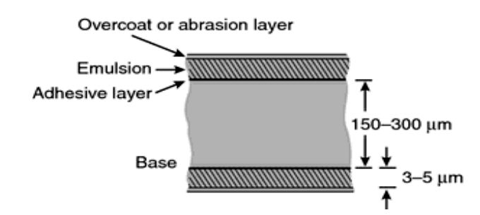
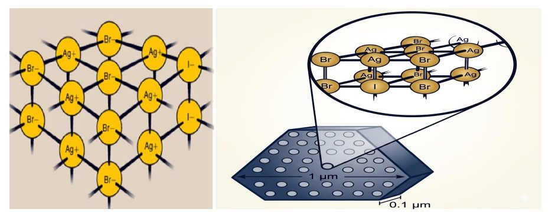
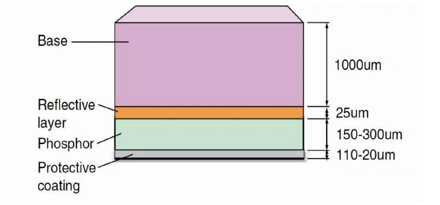
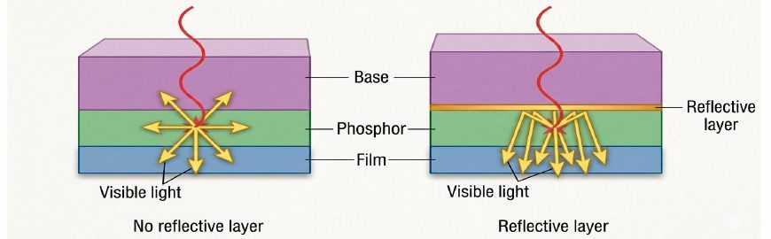
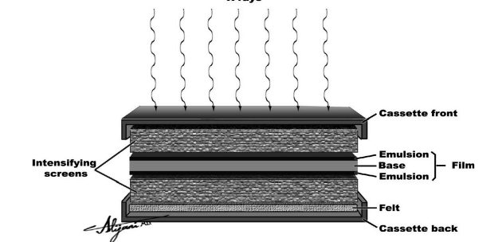
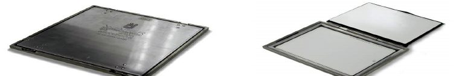
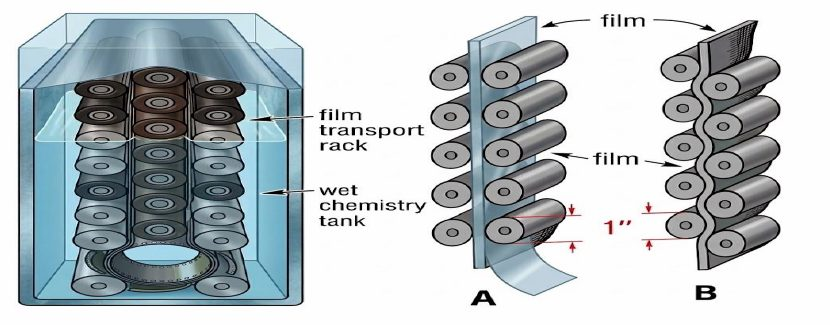
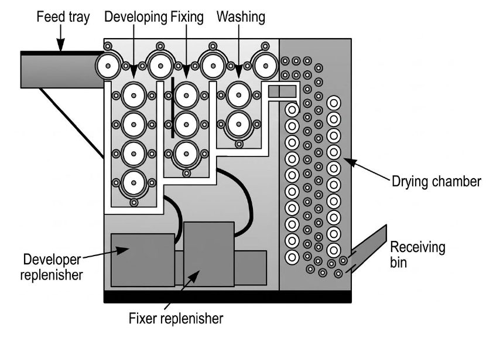

الفيلم الشعاعي والشاشات المقوّية والكاسيت وتحميض الصورة الكامنةFilm, Intensifying Screens, Cassette & Processing the Latent Image
نظري · م04 · 12.5 دقيقةأقسام المحاضرة (7)
- محاور المحاضرةOutlines
- تركيب الفيلم الشعاعيFilm Construction
- المستحلب وبلورات هاليد الفضةEmulsion & Silver Halide Crystals
- الشاشات المقوّية وتركيبهاIntensifying Screens & Screen Construction
- ربط الفيلم بالشاشات والكاسيتScreens – Films Combination & Cassette
- الصورة الكامنة والتحميض اليدويLatent Image & Manual Processing
- التحميض الآلي ومكوّنات الجهازAutomatic Processing & Processor Components
محاور المحاضرةOutlines
Outlines
محاور المحاضرة:
- • Construction of film,تركيب الفيلم.
- • Intensifying screens,الشاشات المقوّية.
- • Cassette.الكاسيت.
- • Processing the latent image:معالجة (تحميض) الصورة الكامنة:
- • Manuallyيدوياً.
- • Automaticallyآلياً.
تركيب الفيلم الشعاعيFilm Construction
تركيب الفيلمFilm construction
Radiographic film basically has two parts, the base and the emulsion, fig(1).
للفيلم الشعاعي أساساً جزءان: القاعدة (base) والمستحلب (emulsion)، كما في الشكل (1).
Most x – ray film has the emulsion coated on both sides and therefore called double – emulsion film.
معظم أفلام الأشعة السينية مطليّة بالمستحلب على الوجهين، ولذلك تُسمّى فيلماً ثنائي المستحلب (double – emulsion film).
Between the emulsion and the base is a thin coating of material, called the adhesive layer, this adhesive layer allows the emulsion and base to maintain proper contact and integrity during use and processing. The emulsion is enclosed by a protective covering of gelatin, called the supercoating. This supercoating protects the emulsion from scratching, pressure, and contamination during use and processing. The thickness of a sheet of radiographic film ranges from 150 to 300 µm (0.15 to 0.3 mm).
بين المستحلب والقاعدة طبقة رقيقة من مادة تُسمّى الطبقة اللاصقة (adhesive layer)، وهذه الطبقة تتيح للمستحلب والقاعدة أن يحافظا على التلامس السليم وتماسك الفيلم أثناء الاستعمال والتحميض. والمستحلب محاط بغطاء واقٍ من الجيلاتين يُسمّى الطلاء الواقي العلوي (supercoating). هذا الطلاء يحمي المستحلب من الخدش والضغط والتلوّث أثناء الاستعمال والتحميض. ويتراوح سمك ورقة الفيلم الشعاعي من 150 إلى 300 ميكرومتر (0.15 إلى 0.3 ملم).

The emulsion is the heart of the x-ray film. It's the material in which x-rays or light photons from screens interact and transfer information. The emulsion consists of a homogeneous mixture of gelatin and silver halide crystals. The gelatin is clear, so that it transmits light, and is sufficiently porous for the processing chemicals to penetrate to the crystal of silver halide during processing.
المستحلب هو قلب فيلم الأشعة السينية. إنه المادة التي تتفاعل فيها الأشعة السينية أو فوتونات الضوء الصادرة من الشاشات وتنقل المعلومات. ويتكوّن المستحلب من خليط متجانس من الجيلاتين وبلورات هاليد الفضة (silver halide). والجيلاتين شفّاف فينفذ منه الضوء، وهو مسامي بدرجة كافية لتتغلغل مواد التحميض الكيميائية إلى بلورة هاليد الفضة أثناء التحميض.
المستحلب وبلورات هاليد الفضةEmulsion & Silver Halide Crystals
Its principle function is to provide mechanical support for the silver halide crystal by holding them uniformly dispersed in place.
وظيفة الجيلاتين الأساسية توفير الدعم الميكانيكي لبلورة هاليد الفضة بإبقائها موزّعة بانتظام في مكانها.
The silver halide crystal is the active ingredient of the radiograph emulsion. In the typical emulsion, 95% of the silver halide are silver bromide; the remainder is usually silver iodide.
بلورة هاليد الفضة هي المكوّن الفعّال في مستحلب الصورة الشعاعية. وفي المستحلب النموذجي تكون 95% من هاليد الفضة برومايد الفضة (silver bromide)، والباقي عادةً يوديد الفضة (silver iodide).

الشاشات المقوّية وتركيبهاIntensifying Screens & Screen Construction
الشاشات المقوّيةIntensifying screens
تركيب الشاشةScreen construction:
X – Ray intensifying screens resemble flexible sheets of plastic or cardboard. They come in sizes corresponding to film sizes. Usually, the radiographic film is sandwiched between two screens; the film so used is double – emulsion film.
الشاشات المقوّية للأشعة السينية تشبه صفائح مرنة من البلاستيك أو الكرتون، وتأتي بأحجام تقابل أحجام الأفلام. وعادةً يوضع الفيلم الشعاعي بين شاشتين؛ والفيلم المستعمل هكذا هو فيلم ثنائي المستحلب.
In most screens there are four distinct layers:
في معظم الشاشات توجد أربع طبقات متميّزة:
- 1. Protective coatingالطبقة الواقية.
- 2. Phosphorالطبقة الفوسفورية.
- 3. Reflective layerالطبقة العاكسة.
- 4. Baseالقاعدة.
١ – الطبقة الواقية1 – Protective coating:
The layer of the intensifying screen closest to the x – ray film is the protective coating. It is 15 to 25 µm thick and is applied to the face of the screen to make the screen resistant to abrasion & damaged caused by handling. Naturally, the protective layer must be transparent to light.
الطبقة الأقرب إلى فيلم الأشعة في الشاشة المقوّية هي الطبقة الواقية (protective coating). سمكها من 15 إلى 25 ميكرومتراً، وتُطبَّق على وجه الشاشة لتجعلها مقاومة للتآكل والتلف الناتج عن التعامل معها. وبطبيعة الحال يجب أن تكون الطبقة الواقية شفّافة للضوء.
٢ – الطبقة الفوسفورية2 – Phosphor:
The active layer of the x – ray intensifying screen is phosphor. The phosphor emits light during stimulation by x – ray. Phosphor layers vary in thickness from perhaps 150 to 300 µm, depending on the type of screen. The phosphor has one purpose: to convert the energy of the x – ray beam into visible light.
الطبقة الفعّالة في الشاشة المقوّية هي الفوسفور (phosphor). يُصدر الفوسفور الضوء عند تحفيزه بالأشعة السينية. وتتفاوت سماكة الطبقة الفوسفورية من نحو 150 إلى 300 ميكرومتر حسب نوع الشاشة. وللفوسفور غرض واحد: تحويل طاقة حزمة الأشعة السينية إلى ضوء مرئي.

٣ – الطبقة العاكسة3 - Reflective layer:
Between the phosphor & the base is a reflective layer approximately 25 µm thick made of a shiny substance such as magnesium oxide or titanium dioxide. Its function is demonstrated in Fig.4. When x-rays interact with the active phosphor, light is emitted isotropically, that is, with equal intensity in all directions. Less than half the light is emitted in the direction of the film. The reflective layer intercepts light headed in other directions and redirects it to the film.
بين الفوسفور والقاعدة توجد طبقة عاكسة (reflective layer) سمكها نحو 25 ميكرومتراً، مصنوعة من مادة لامعة مثل أكسيد المغنيسيوم أو ثاني أكسيد التيتانيوم. وتظهر وظيفتها في الشكل (4). فعندما تتفاعل الأشعة السينية مع الفوسفور الفعّال يُصدَر الضوء بالتساوي في كل الاتجاهات (isotropically)، أي بنفس الشدّة في جميع الاتجاهات. وأقل من نصف الضوء يُصدَر باتجاه الفيلم. فتعترض الطبقة العاكسة الضوء المتجه نحو الاتجاهات الأخرى وتعيد توجيهه إلى الفيلم.

٤ – القاعدة4 - Base:
4 - Base: The layer farthest from the film is called the base. The base perhaps 1 mm thick and serves principally as a mechanical support for the active phosphor layer. It is made of high – grade cardboard or polyester.
الطبقة الأبعد عن الفيلم تُسمّى القاعدة. سمك القاعدة نحو 1 ملم، وتُستعمل أساساً دعماً ميكانيكياً للطبقة الفوسفورية الفعّالة. وهي مصنوعة من كرتون عالي الجودة أو من البوليستر (polyester).
ربط الفيلم بالشاشات والكاسيتScreens – Films Combination & Cassette
تركيب الفيلم مع الشاشاتScreens – films combination
X-rays intensifying screens are nearly always used in pairs. Best results will be obtained if they are selected with this in mind. Figure (6) is a cross section of a properly loaded film cassette containing front and back screens with a double - emulsion film.
الشاشات المقوّية للأشعة السينية تُستعمل دائماً تقريباً بشكل أزواج. وتُحصَل أفضل النتائج إذا اختيرت مع مراعاة ذلك. الشكل (6) مقطع عرضي لكاسيت مشحون بشكل صحيح يحتوي شاشتين أمامية وخلفية مع فيلم ثنائي المستحلب.
الكاسيتCassette
The cassette is the rigid holder that contains the screens and film. Some of the important characteristics of a good cassette are indicated in Fig (6) .The front surface, the side facing the x-ray source, should be made of material with a low atomic number, such as plastic or cardboard. It should be as thin as practicable yet sturdy. Attenuation of the x-ray beam by the front cover of the cassette is undesirable. Attached to the inside of the front cover is the front screen, and attached to the back cover is the back screen. The radiographic film is loaded between these two screens.
الكاسيت (cassette) هو الحاوية الصلبة التي تحتوي الشاشات والفيلم. وبعض الخصائص المهمة للكاسيت الجيد موضّحة في الشكل (6). السطح الأمامي، أي الجهة المواجهة لمصدر الأشعة السينية، يجب أن يُصنع من مادة ذات عدد ذرّي منخفض مثل البلاستيك أو الكرتون. ويجب أن يكون رقيقاً قدر الإمكان لكنه متين. وتوهين حزمة الأشعة السينية بالغطاء الأمامي للكاسيت أمر غير مرغوب فيه. وتُثبَّت الشاشة الأمامية على الجهة الداخلية للغطاء الأمامي، وتُثبَّت الشاشة الخلفية على الغطاء الخلفي. ويوضع الفيلم الشعاعي بين هاتين الشاشتين.


Between each screen and the cassette cover will be some sort of compression device, such as felt or rubber that maintains close turn-screen contact when the cassette is closed and latched. The back cover is usually made of heavy metal to minimize backscatter. The x-rays transmitted through the screen-film combination to the back cover will be absorbed photoelectrically more readily in a high-Z material than in a low-Z material.
بين كل شاشة وغطاء الكاسيت توجد وسيلة ضغط من نوع ما، مثل اللبّاد أو المطاط، تحافظ على التلامس الوثيق بين الشاشة والفيلم عند إغلاق الكاسيت وتثبيته. والغطاء الخلفي يُصنع عادةً من معدن ثقيل لتقليل الإشعاع المرتد (backscatter). فالأشعة السينية النافذة عبر مجموعة الشاشة والفيلم إلى الغطاء الخلفي ستُمتَصّ بالتأثير الكهروضوئي بسهولة أكبر في مادة ذات عدد ذرّي عالٍ (high-Z) منها في مادة ذات عدد ذرّي منخفض (low-Z).
If the back plate were made of a low-Z material, x-rays could be transmitted through the entire cassette, and some might be scattered back to the film by the cassette holding device or a nearby wall. This is called backscatter radiation and results in decreased image contrast. Sometimes the cassette hinges or hold-down clamps on the back cover are imaged.
لو كانت اللوحة الخلفية مصنوعة من مادة ذات عدد ذرّي منخفض، فقد تنفذ الأشعة السينية عبر الكاسيت كله، وقد يتشتّت بعضها راجعاً إلى الفيلم بواسطة أداة حمل الكاسيت أو جدار قريب. وهذا يُسمّى الإشعاع المرتد (backscatter radiation) ويؤدي إلى انخفاض تباين الصورة. وأحياناً تظهر في الصورة مفصّلات الكاسيت أو مشابك التثبيت على الغطاء الخلفي.
الصورة الكامنة والتحميض اليدويLatent Image & Manual Processing
طرق التحميض اليدوي والآلي للفيلم الشعاعيManual & Automatic processing methods of radiographic film
The radiation exiting the patient and incident on the radiographic film deposits energy in the emulsion primarily by photoelectric interaction with the atoms of the silver halide crystal. This energy is deposited in a pattern representative of the object or part of the anatomy being radiographed. If one observed the film immediately after exposure, no image would be seen. There is, however, an image present, called a latent image.
الإشعاع الخارج من المريض والساقط على الفيلم الشعاعي يودع الطاقة في المستحلب أساساً بالتفاعل الكهروضوئي مع ذرّات بلورة هاليد الفضة. وتُودَع هذه الطاقة بنمط يمثّل الجسم أو جزء التشريح الذي يُصوَّر. فلو لاحظ أحدٌ الفيلم مباشرة بعد التعريض فلن يرى أي صورة. ومع ذلك توجد صورة، تُسمّى الصورة الكامنة (latent image).
The latent image is the invisible change induced in the various silver halide crystals. With proper chemical processing the latent image becomes a manifest image. Nearly all radiographic processing is done automatically today, the chemicals involved in both (manual & automatic) are basically the same. But in automatic processing the times for each step are shorter, and the chemical concentrations and temperature are higher.
الصورة الكامنة هي التغيّر غير المرئي الحاصل في بلورات هاليد الفضة المختلفة. وبالمعالجة الكيميائية الصحيحة تصبح الصورة الكامنة صورة ظاهرة (manifest image). ويُجرى اليوم تقريباً كل تحميض الأفلام الشعاعية آلياً، والمواد الكيميائية المستعملة في الطريقتين (اليدوية والآلية) هي نفسها أساساً. لكن في التحميض الآلي تكون أزمنة كل خطوة أقصر، وتراكيز المواد الكيميائية ودرجة الحرارة أعلى.
التحميض اليدويManual processing
Sequence of events in processing a radiograph manually:
تسلسل الأحداث في تحميض صورة شعاعية يدوياً:
The first step in the processing sequence is to wet the film to loosen the emulsion so that subsequent chemical baths can reach all parts of the emulsion uniformly. The wetting agent is water, it penetrates through the gelatin of the emulsion, swelling it and causing it to expand. This step is often omitted in automatic processing, and the wetting agent is then incorporated into the second step, development.
الخطوة الأولى في تسلسل التحميض هي ترطيب الفيلم لتحرير المستحلب حتى تصل الحمّامات الكيميائية اللاحقة إلى كل أجزاء المستحلب بانتظام. والمادة المرطّبة هي الماء، وهو ينفذ عبر جيلاتين المستحلب فينفّخه ويجعله يتمدد. وغالباً تُحذف هذه الخطوة في التحميض الآلي، وتُدمج المادة المرطّبة حينئذٍ في الخطوة الثانية، وهي التظهير.
Development is the stage of processing in which the latent image is converted to a manifest image. The principal action during development involves changing silver ions of the exposed crystals into metallic silver. phenidone and hydroquinone are examples of reducing agents.
التظهير (development) هو مرحلة التحميض التي تتحوّل فيها الصورة الكامنة إلى صورة ظاهرة. والفعل الأساسي أثناء التظهير هو تحويل أيونات الفضة في البلورات المعرّضة إلى فضة معدنية. والفينيدون (phenidone) والهيدروكينون (hydroquinone) أمثلة على العوامل المختزِلة.
After development, the film rinsed in an acid solution designed to stop the development process and remove excess developer chemicals from the emulsion. Photographers call this step stop bath, and in processing radiographs the stop bath is sometimes included in the next step, fixation.
بعد التظهير يُشطَف الفيلم في محلول حمضي مصمَّم لإيقاف عملية التظهير وإزالة الزائد من المواد الكيميائية للمظهِّر من المستحلب. ويسمّي المصوّرون هذه الخطوة حمّام الإيقاف (stop bath)، وفي تحميض الصور الشعاعية يُدرَج حمّام الإيقاف أحياناً في الخطوة التالية، وهي التثبيت.
During fixation, the silver halide that was not exposed to radiation is dissolved and removed from the emulsion. The gelatin portion of the emulsion is hardened.
أثناء التثبيت (fixation) يُذاب هاليد الفضة الذي لم يتعرّض للإشعاع ويُزال من المستحلب. ويتصلّب جزء الجيلاتين من المستحلب.
Fixation is followed by a vigorous washing of the film to remove any remaining chemicals from the previous processing steps.
يلي التثبيت غسل قوي للفيلم لإزالة أي مواد كيميائية متبقية من خطوات التحميض السابقة.
Finally, the film is dried to remove the water used to wash it and to make the film acceptable for handling and viewing
وأخيراً يُجفَّف الفيلم لإزالة الماء المستعمل في غسله ولجعل الفيلم صالحاً للتعامل معه ومشاهدته.
الجدول (1): تسلسل الأحداث في تحميض صورة شعاعيةTable (1): Sequence of events in processing a radiograph
The steps of development and fixation are the most important to the processing of radiographic film
خطوتا التظهير والتثبيت هما الأهم في تحميض الفيلم الشعاعي.
التحميض الآلي ومكوّنات الجهازAutomatic Processing & Processor Components
التحميض الآليAutomatic processing
Automatic processing requires an electromechanical device called an automatic film processor, which transports the film from one solution to the next without any manual labor except for placing the film into the device. This shortens the overall processing time, increases the number of films that can be processed in a given period, and ensures less variability of overall film quality than manually processed films because the processing time, solution temperature, and chemical replenishment are automatically controlled.
يحتاج التحميض الآلي إلى جهاز كهروميكانيكي يُسمّى جهاز تحميض الأفلام الآلي (automatic film processor)، وهو ينقل الفيلم من محلول إلى التالي بدون أي عمل يدوي سوى وضع الفيلم في الجهاز. وهذا يقصّر زمن التحميض الكلي، ويزيد عدد الأفلام التي تُحمَّض في فترة معينة، ويضمن تفاوتاً أقل في جودة الفيلم الكلية مما في الأفلام المحمَّضة يدوياً، لأن زمن التحميض ودرجة حرارة المحلول وتعويض المواد الكيميائية تُضبَط آلياً.
The disadvantages of automatic processing include higher capital and maintenance costs, increased chemical fog due to higher processing temperatures, and transport problems that can damage or destroy images during processing.
ومن عيوب التحميض الآلي ارتفاع كلفة الشراء والصيانة، وزيادة التضبيب (chemical fog) بسبب ارتفاع درجات حرارة التحميض، ومشاكل النقل التي قد تتلف الصور أو تدمّرها أثناء التحميض.
The principal components of an automatic processor are:
المكوّنات الرئيسية لجهاز التحميض الآلي هي:
١. نظام النقل1. The transport system:
The transport system consists of three principal subsystems: rollers, transport racks and Drive motor. From the entrance rollers, the film is transported by rollers and racks through the wet chemistry tanks and drying chamber and finally is deposited in the receiving bin.
يتكوّن نظام النقل من ثلاثة أنظمة فرعية رئيسية: البكرات (rollers)، وحوامل النقل (transport racks)، ومحرّك الدفع (drive motor). ومن بكرات المدخل ينقل البكرات والحوامل الفيلم عبر خزانات المواد الكيميائية الرطبة وغرفة التجفيف، ثم يُودَع أخيراً في صندوق الاستلام.

٢. نظام التحكّم بدرجة الحرارة2. The temperature – control system:
The system is a thermostat-controlled heater that keeps the processing chemicals at optimal temperatures. The three chemistries, developer, fixer & washer require precise temperature control. Developer temperature is usually maintained at (350 C). Wash water temperature is usually maintained at (2.80 C). lower.
هذا النظام سخّان يتحكّم به مثبّت حراري (thermostat) ويُبقي المواد الكيميائية المستعملة في التحميض عند درجات الحرارة المثلى. والمواد الثلاث، المظهِّر والمثبِّت والماء الغسّال، تتطلّب تحكّماً دقيقاً بدرجة الحرارة. وتُحفَظ درجة حرارة المظهِّر عادةً عند (35 °C). وتُحفَظ درجة حرارة ماء الغسل عادةً عند (2.8 °C). أقل.
٣. نظام الدوران3. Circulation system:
Agitation is necessary to continually mix the processing chemistry (Dev. Fixer, wash water), to maintain a constant temperature throughout the processing tank. Agitation is provided by a circulation system that continuously pumps the developer and the fixer, keeping each tank in constant agitation
التحريك ضروري لخلط مواد التحميض (المظهِّر، والمثبِّت، وماء الغسل) باستمرار، للحفاظ على درجة حرارة ثابتة في كل خزان تحميض. ويؤمَّن التحريك بنظام دوران يضخّ المظهِّر والمثبِّت باستمرار، فيبقي كل خزان في حالة تحريك دائم.
٤. نظام التعويض4. Replenishment system:
This replaces the chemicals in the tanks as they are used up in the film development process. If neither the developer nor fixer were replenished, they would quickly lose chemical balance, the level of solution in each tank would drop, and shorter contact times with the chemistry would result. The replenishment system meter into each tank the proper amount of chemistry to maintain volume and chemical activity.
يعوّض هذا النظام المواد الكيميائية في الخزانات عندما تُستهلَك في عملية تظهير الفيلم. فلو لم يُعوَّض المظهِّر ولا المثبِّت لفقدا توازنهما الكيميائي بسرعة، وانخفض مستوى المحلول في كل خزان، وقصرت أزمنة التلامس مع المواد الكيميائية. ويقيس نظام التعويض ويضخّ إلى كل خزان الكمية المناسبة من المواد الكيميائية للحفاظ على الحجم والفعالية الكيميائية.
٥. نظام التجفيف5. Dryer system:
If a finished radiograph were at all wet or damp, then it would easily pick up dust particles in the air that could result in artifacts, furthermore, a wet or damp film is difficult to handle in a view box. When stored it becomes sticky & be destroyed.
لو كانت الصورة الشعاعية المنتهية رطبة أو مبلّلة ولو قليلاً، فستلتقط بسهولة جزيئات الغبار من الهواء مما قد يسبب آثاراً صناعية (artifacts)، وفضلاً عن ذلك يصعب التعامل مع الفيلم الرطب أو المبلّل في صندوق العرض. وعند خزنه يصبح لزجاً ويتلف.
Dryer system consist of a blower, ventilation ducts, drying tubes and exhaust system, it completely extracts all residual moisture from the processed radiograph so that it drops into the receiving bin dry. So, The film is squeegeed and a blower / heater directs clean heated air onto the processed film and it shrinks and seals the emulsion so the film can be handled safely.
يتكوّن نظام التجفيف من مروحة نفخ، وقنوات تهوية، وأنابيب تجفيف، ونظام سحب العادم. وهو يستخلص كل الرطوبة المتبقية من الصورة الشعاعية المحمَّضة تماماً بحيث تسقط في صندوق الاستلام جافّة. لذلك يُمسَح الماء عن الفيلم (squeegeed)، وتوجّه مروحة نفخ/سخّان هواءً نظيفاً ساخناً على الفيلم المحمَّض فيتقلّص المستحلب ويُختَم فيمكن التعامل مع الفيلم بأمان.
٦. النظام الكهربائي6. Electrical system:
Electrical power must be provided to the thermal & the mechanical components of each of the previous systems, this is done through a proper wiring of the automatic processor.
يجب توفير الطاقة الكهربائية للمكوّنات الحرارية والميكانيكية في كل نظام من الأنظمة السابقة، ويتم ذلك عبر توصيل أسلاك مناسب لجهاز التحميض الآلي.

المحاضرة مسموعة
نص الأستاذ بالإنكليزي مثل الأصل · 12.5 دقيقة. اضغط أي جملة تسمعها، أو مصطلح منقّط تسمع لفظه ومعناه.
Outlinesمحاور المحاضرة
Outlines
Outlines
Construction of film,
Intensifying screens,
Cassette.
Processing the latent image:
Manually
Automatically
Film Constructionتركيب الفيلم الشعاعي
Film Construction
Film construction
Radiographic film basically has two parts, the base and the emulsion, fig(1).
Most x – ray film has the emulsion coated on both sides and therefore called double – emulsion film.
Between the emulsion and the base is a thin coating of material, called the adhesive layer, this adhesive layer allows the emulsion and base to maintain proper contact and integrity during use and processing. The emulsion is enclosed by a protective covering of gelatin, called the supercoating. This supercoating protects the emulsion from scratching, pressure, and contamination during use and processing. The thickness of a sheet of radiographic film ranges from 150 to 300 µm (0.15 to 0.3 mm).
The emulsion is the heart of the x-ray film. It's the material in which x-rays or light photons from screens interact and transfer information. The emulsion consists of a homogeneous mixture of gelatin and silver halide crystals. The gelatin is clear, so that it transmits light, and is sufficiently porous for the processing chemicals to penetrate to the crystal of silver halide during processing.
Emulsion & Silver Halide Crystalsالمستحلب وبلورات هاليد الفضة
Emulsion & Silver Halide Crystals
Its principle function is to provide mechanical support for the silver halide crystal by holding them uniformly dispersed in place.
The silver halide crystal is the active ingredient of the radiograph emulsion. In the typical emulsion, 95% of the silver halide are silver bromide; the remainder is usually silver iodide.
Intensifying Screens & Screen Constructionالشاشات المقوّية وتركيبها
Intensifying Screens & Screen Construction
Intensifying screens
Screen construction:
X – Ray intensifying screens resemble flexible sheets of plastic or cardboard. They come in sizes corresponding to film sizes. Usually, the radiographic film is sandwiched between two screens; the film so used is double – emulsion film.
In most screens there are four distinct layers:
Protective coating
Phosphor
Reflective layer
Base
1 – Protective coating:
The layer of the intensifying screen closest to the x – ray film is the protective coating. It is 15 to 25 µm thick and is applied to the face of the screen to make the screen resistant to abrasion & damaged caused by handling. Naturally, the protective layer must be transparent to light.
2 – Phosphor:
The active layer of the x – ray intensifying screen is phosphor. The phosphor emits light during stimulation by x – ray. Phosphor layers vary in thickness from perhaps 150 to 300 µm, depending on the type of screen. The phosphor has one purpose: to convert the energy of the x – ray beam into visible light.
3 - Reflective layer:
Between the phosphor & the base is a reflective layer approximately 25 µm thick made of a shiny substance such as magnesium oxide or titanium dioxide. Its function is demonstrated in Fig.4. When x-rays interact with the active phosphor, light is emitted isotropically, that is, with equal intensity in all directions. Less than half the light is emitted in the direction of the film. The reflective layer intercepts light headed in other directions and redirects it to the film.
4 - Base:
4 - Base: The layer farthest from the film is called the base. The base perhaps 1 mm thick and serves principally as a mechanical support for the active phosphor layer. It is made of high – grade cardboard or polyester.
Screens – Films Combination & Cassetteربط الفيلم بالشاشات والكاسيت
Screens – Films Combination & Cassette
Screens – films combination
X-rays intensifying screens are nearly always used in pairs. Best results will be obtained if they are selected with this in mind. Figure (6) is a cross section of a properly loaded film cassette containing front and back screens with a double - emulsion film.
Cassette
The cassette is the rigid holder that contains the screens and film. Some of the important characteristics of a good cassette are indicated in Fig (6) .The front surface, the side facing the x-ray source, should be made of material with a low atomic number, such as plastic or cardboard. It should be as thin as practicable yet sturdy. Attenuation of the x-ray beam by the front cover of the cassette is undesirable. Attached to the inside of the front cover is the front screen, and attached to the back cover is the back screen. The radiographic film is loaded between these two screens.
Between each screen and the cassette cover will be some sort of compression device, such as felt or rubber that maintains close turn-screen contact when the cassette is closed and latched. The back cover is usually made of heavy metal to minimize backscatter. The x-rays transmitted through the screen-film combination to the back cover will be absorbed photoelectrically more readily in a high-Z material than in a low-Z material.
If the back plate were made of a low-Z material, x-rays could be transmitted through the entire cassette, and some might be scattered back to the film by the cassette holding device or a nearby wall. This is called backscatter radiation and results in decreased image contrast. Sometimes the cassette hinges or hold-down clamps on the back cover are imaged.
Latent Image & Manual Processingالصورة الكامنة والتحميض اليدوي
Latent Image & Manual Processing
Manual & Automatic processing methods of radiographic film
The radiation exiting the patient and incident on the radiographic film deposits energy in the emulsion primarily by photoelectric interaction with the atoms of the silver halide crystal. This energy is deposited in a pattern representative of the object or part of the anatomy being radiographed. If one observed the film immediately after exposure, no image would be seen. There is, however, an image present, called a latent image.
The latent image is the invisible change induced in the various silver halide crystals. With proper chemical processing the latent image becomes a manifest image. Nearly all radiographic processing is done automatically today, the chemicals involved in both (manual & automatic) are basically the same. But in automatic processing the times for each step are shorter, and the chemical concentrations and temperature are higher.
Manual processing
Sequence of events in processing a radiograph manually:
The first step in the processing sequence is to wet the film to loosen the emulsion so that subsequent chemical baths can reach all parts of the emulsion uniformly. The wetting agent is water, it penetrates through the gelatin of the emulsion, swelling it and causing it to expand. This step is often omitted in automatic processing, and the wetting agent is then incorporated into the second step, development.
Development is the stage of processing in which the latent image is converted to a manifest image. The principal action during development involves changing silver ions of the exposed crystals into metallic silver. phenidone and hydroquinone are examples of reducing agents.
After development, the film rinsed in an acid solution designed to stop the development process and remove excess developer chemicals from the emulsion. Photographers call this step stop bath, and in processing radiographs the stop bath is sometimes included in the next step, fixation.
During fixation, the silver halide that was not exposed to radiation is dissolved and removed from the emulsion. The gelatin portion of the emulsion is hardened.
Fixation is followed by a vigorous washing of the film to remove any remaining chemicals from the previous processing steps.
Finally, the film is dried to remove the water used to wash it and to make the film acceptable for handling and viewing
Table (1): Sequence of events in processing a radiograph
The steps of development and fixation are the most important to the processing of radiographic film
Automatic Processing & Processor Componentsالتحميض الآلي ومكوّنات الجهاز
Automatic Processing & Processor Components
Automatic processing
Automatic processing requires an electromechanical device called an automatic film processor, which transports the film from one solution to the next without any manual labor except for placing the film into the device. This shortens the overall processing time, increases the number of films that can be processed in a given period, and ensures less variability of overall film quality than manually processed films because the processing time, solution temperature, and chemical replenishment are automatically controlled.
The disadvantages of automatic processing include higher capital and maintenance costs, increased chemical fog due to higher processing temperatures, and transport problems that can damage or destroy images during processing.
The principal components of an automatic processor are:
1. The transport system:
The transport system consists of three principal subsystems: rollers, transport racks and Drive motor. From the entrance rollers, the film is transported by rollers and racks through the wet chemistry tanks and drying chamber and finally is deposited in the receiving bin.
2. The temperature – control system:
The system is a thermostat-controlled heater that keeps the processing chemicals at optimal temperatures. The three chemistries, developer, fixer & washer require precise temperature control. Developer temperature is usually maintained at (350 C). Wash water temperature is usually maintained at (2.80 C). lower.
3. Circulation system:
Agitation is necessary to continually mix the processing chemistry (Dev. Fixer, wash water), to maintain a constant temperature throughout the processing tank. Agitation is provided by a circulation system that continuously pumps the developer and the fixer, keeping each tank in constant agitation
4. Replenishment system:
This replaces the chemicals in the tanks as they are used up in the film development process. If neither the developer nor fixer were replenished, they would quickly lose chemical balance, the level of solution in each tank would drop, and shorter contact times with the chemistry would result. The replenishment system meter into each tank the proper amount of chemistry to maintain volume and chemical activity.
5. Dryer system:
If a finished radiograph were at all wet or damp, then it would easily pick up dust particles in the air that could result in artifacts, furthermore, a wet or damp film is difficult to handle in a view box. When stored it becomes sticky & be destroyed.
Dryer system consist of a blower, ventilation ducts, drying tubes and exhaust system, it completely extracts all residual moisture from the processed radiograph so that it drops into the receiving bin dry. So, The film is squeegeed and a blower / heater directs clean heated air onto the processed film and it shrinks and seals the emulsion so the film can be handled safely.
6. Electrical system:
Electrical power must be provided to the thermal & the mechanical components of each of the previous systems, this is done through a proper wiring of the automatic processor.
كل أسئلة المحاضرة: السؤال إنكليزي وتحته عربي، وكل خيار بلغتين، والجواب الصحيح معلّم ويّاه «ليش صح» · 0.4 MB
قراءة الأسئلة تحميلاضغط أي مصطلح منقّط تسمع لفظه ومعناه.